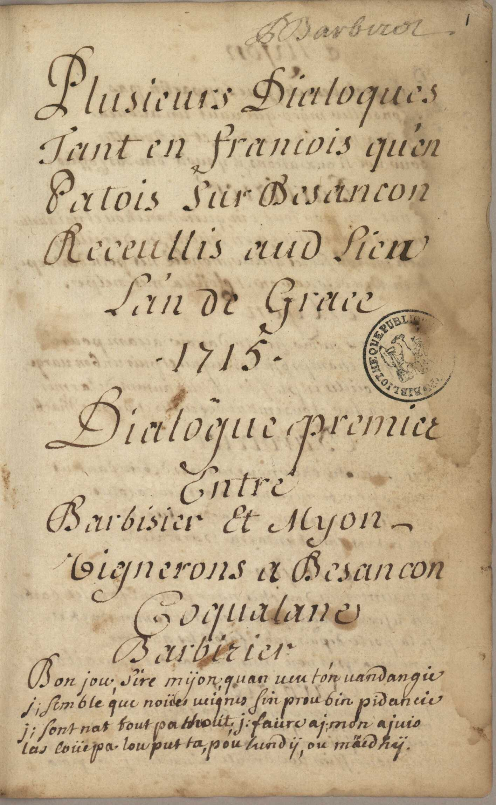
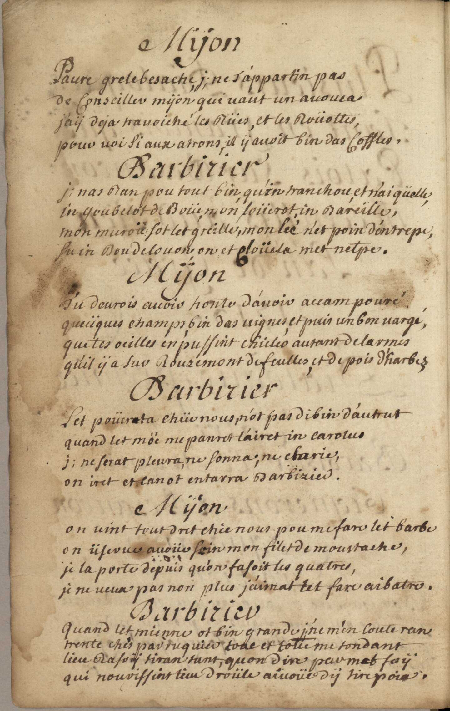
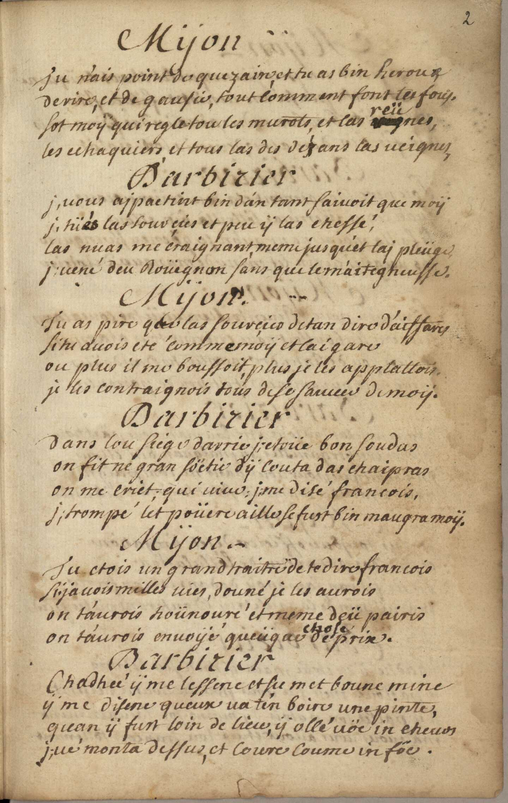
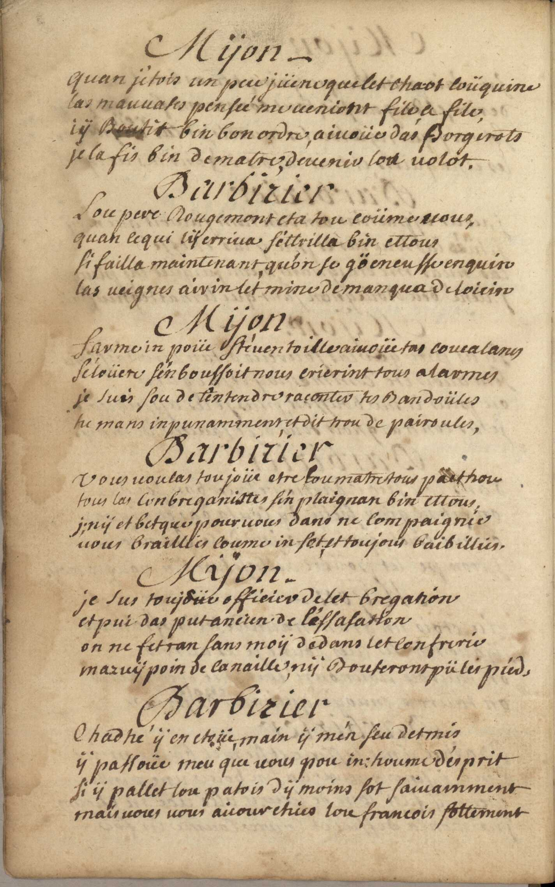
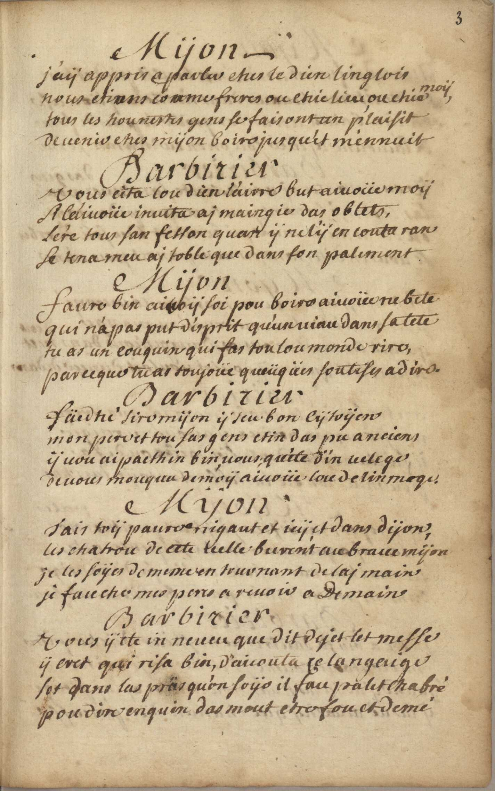
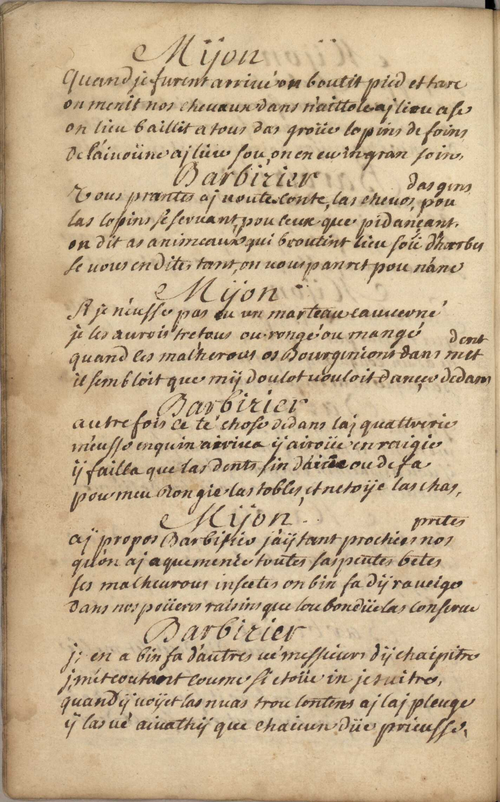
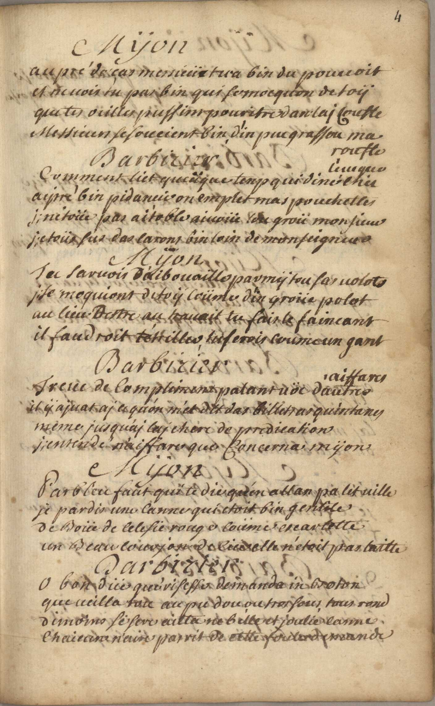
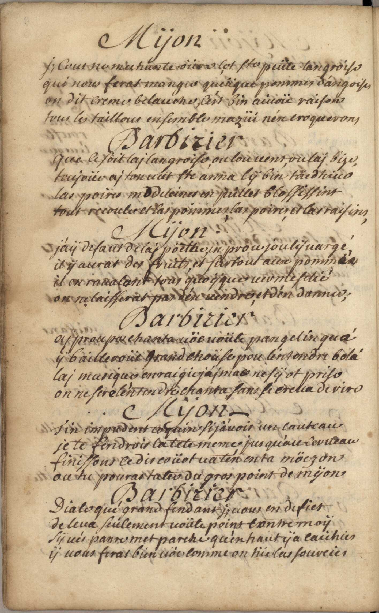
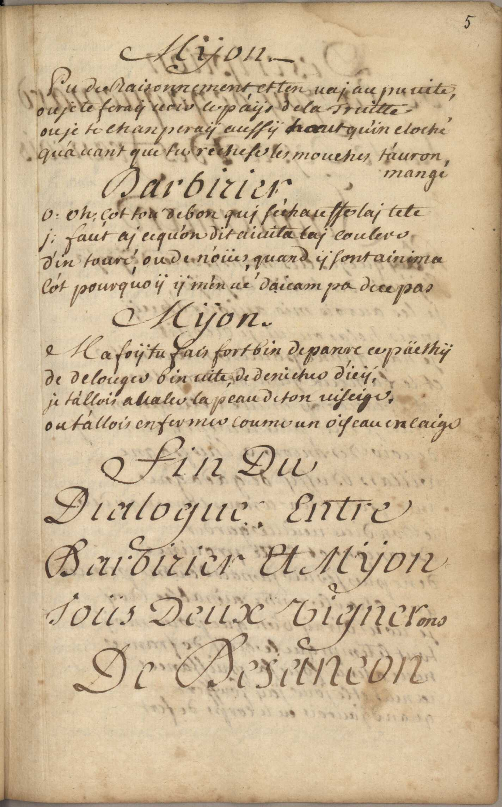

Dialogue premier
Entre Barbisier et Myon, vignerons à Besançon, coqualans, barbisier
Click a manuscript image to enlarge it. Cliquez sur une image du manuscrit pour l’agrandir.

Barbizier
Bon jou, Sire mÿon quan veu t'on uandangie
ji semble que noües ueignes fin prou bin pidancie
ji sont nat tout pathoüt ; ji faüre ai mon aiuis
las coüepa lou put ta, pou lundÿ, ou mäedhÿ.

Nÿon
Paure grele besache, ji ne t'appartin pas
de Conseiller mÿon qui vaut un auouca
j'aÿ deja trauoiché les Rües, et les Roüottes,
pour uoi si aux aîrons, il ÿ auoit bin des coffles.
Barbizier
Ji nas ran pou tout bin, qu'in tranchou et n'aiqüelle,
in goubelot de boüe, mon foüerot, in bareille,
mon muroü sot let greille, mon lie n'et poin d'entrepo
su in bou de louon on et cloüela met netpe.
Mÿon :
Tu deurois avoir honte d'auoir accampouré
queüques champs, bin das uignes et puis un bon uargé,
que tes oeilles en pussint chüles autant de larmes
qu'il ÿ a sur Rouzemont de feulles, et de pois d'harbes
Barbizier
Let poüerta chüe nous, n'ot pas di bin d'autrut
quand let möe me panret l'airet in carolus
Ji ne ferat pleura, ne sonna; ne charie,
on iret et lan ot entarra Barbizier.
Mÿon
On uint tout dret chée nous pou me fare let barbe
on üserue auoüe soin mon filet de moustache,
je la porte depuis qu'on fasoit les quatres,
je ne ueux pas non plus j'aimat tet fare aibatre.
Barbizier
Quand let mienne ot bin grandi ji ne m'en coute ran
trente chis par ruquier toue et toties me tondant
lieu rasoÿ tiran tant, quon dire par met foÿ
qui nourissint lieu droüle aiuoüe dÿ tirepoia

Myon
Tu n'ais point de quezain et tu as bin heroux
de rire, et de gausié, tout comment font tes foüs,
Sot moÿ qui regle tou les murots, et las reünes,
les echaquiers et tous las des déz ans las ueignes,
Barbizier
Ji uous aipaetint bin d'an tant saiuoit que moÿ
jy tüés las sourçies et peu ÿ las chessé,
las nuas me craignant meme jusqu'et lai pleüge
ji uené deu Roüegnon sans que ce m'aitegneusse.
Mÿon
Tu as pire que las sourçies de tan diro d'aiffares
si tu auois eté comme moÿ et lai gare
ou plus il me boussoit, plus je les applattois
je les contraignois tous de se sauuer de moÿ.
Barbizier
dans lou siege darrie ji etouë bon soudas
on fit ne gran söetie dÿ couta das chaipras
on me criet; qui uiue : ji me disé francois,
ji trompé let poüere aille se fust bin maugra moÿ.
Mÿon
Tu etois un grand traitre de te dire francois
Si j'auois milles uies douné je les aurois
on t'aurois hoünouré et meme deü pairis
on t'aurois enuoÿé queüque chose de prix.
Barbizier
Chadhée ÿ me lesserie et su met boune mine
ÿ me disene gueux ua t'en boire une pinte,
quand ÿ fust loin de lieu, ÿ ollé uöe in cheuos
ji ué monta dessus, et coure coume in föe.

Mÿon
quand j'étois un peu jüene que let chaot coüquine
las mauuases pensée me ueniont file a file,
i ÿ boutit bin bon ordre, aiuoües das borgirots
je la fis bin de matre deuenir lou uolot.
Barbizier
Lou pere Rougement eta tou coüme uous,
quan ce qui lÿ erriua s'ettrilla bin ettous
si failla maintenant qu'on se göeneusse enquin
las ueignes airin let mine de manqua de loicin
Myon
Sarme un poüe ste'uen toille aiuoüe tas coucalanes
Seloüere s'en boussoit nous crierint tous alarmes
je suis sou de t'entendre raconter tes bandoüles
tu mans inpunamment et dit trou de pairoules,
Barbizier
Uous uoulas toujoür etre lou matre tout päethou
tous las conbreganittes s'en plaignan bin ettous
ji nÿ et betque pour uous dans ne compaignie
uous braillies coume in sot, et toujous baibillies.
Mÿon
Je sus toujoüe officier de let bregation
et pui das put ancien de l'essasation
on ne fet ran sans moÿ dedans let confrerie
mazuÿ poin de canaille, nÿ bouterons pü les pieds.
Barbizier
Chadhé ÿ en etoüe main ÿ m'en seu detmis
ÿ passoüe meu que uous pou in houme d'esprit
si ÿ pallet lou patois dÿ moins sot saiuamment
mais uous uous aicour chies lou francois sottement

Mÿon
j'aÿ appris a parler ches le dien linglois
nous etions comme freres ou chie lieu ou chie moÿ,
tous les hounestes gens se fais ont un plaisir
de venir ches mÿon boire jusqu'et ménnuit
Barbizier
Uous cita lou dien l'airre but aiuoüe moÿ
A l'aiuoüe inuita aj maingie das oblets,
l'ere tous san fellon quan ÿ ne l'ÿ en couta ran
Se tena meu aj toble que dans son palement
Mÿon
Faure bin aiuoÿ soi pou boire aiuoüe ne bete
qui n'a pas put d'esprit qu'un uiau dans sa tete
tu as un couquin qui fas tou lou monde rire,
parceque tu as toujoüe queüqües soutises a dire.
Barbizier
Fäedhé sire mÿon ÿ seu bon cÿtoÿen
mon pere et tou sas gens etin das pu anciens
ÿ uou aipaethin bin, uous qu'ete d'in uelege
de uous mouqua de moÿ aiuoüe lou de linmage
Myon
Tais toÿ paure nigaud et ici et dans dijon,
les chatrou de cete uelle burent au braue mÿon
je les soÿes de meme en tournant de lai main
je fauche mes pens a reuoir a demain
Barbizier
Uous ÿ ete in neueu que dit dejet let messe
ÿ cret qui risa bin d'aicouta ce langaige
sot dans las präs qu'on soÿe il fau palet chabré
pou dire enquin das mout etre fou et demi

Mÿon
Quand je furent arriué on boutit pied et tare
on menit nos cheuaux dans n'aittole ai lieu ase
on lieu baillit a tous das groüe lopins de foins
de l'aiuoüne ai lieu sou, on en eu in gran soins
Barbizier
Uous prantes ai uoute conte, las cheuos, pou das gins
las lopins se seruant, pou ceux que pidançant
on dit as animeaux qui broutint lieu soü d'harbes
se uous en dites tant, on ne uous panret pou n'anes
Myon
Si je n'eusse pas eu un marteau cauuerné
je les aurois tretous ou rongé ou mangé
quand ces mal'herous os Bourginions dans met dent
il sembloit que mÿ doulot uouloit dançer dedans
Barbizier
autrefois ce te chose dedans lai quattrerie
m'eusse enquin airiua ÿ airoüe enraigie
ÿ failla que las dents sin d'airie ou de fa
pour meu rongie las tobles et netoÿe las chas
Mÿon
Aj propos Barbisier j'aÿ tant prochies nos pretes
qu'on ai a que menée toutes sas peutes betes
ses malheuroüs insectes on bin fa dÿ raueiges
dans nos poüeres raisins que lou bon düe las conferue
Barbizier
Ji en a bin fa d'autres ue messieurs dÿ chaipitre
ji m'etcoutant coume si etoüe in jesuitre,
quand ÿ uoÿet las nuas trou lontens ai lai pleuge
ÿ las ué aiuathÿ que chaicun düe prieusse.

Mÿon
au pré de ças messieür tu a bin du pouuoit
et ne uois tu pas bin qui se mocquon de toÿ
que tes oeilles pussint pouritre dan lai coufte
Messieurs se soucient bin d'in peu grassou ma rouste
Barbizier
Comment liet queüque tenp qui dine chez l'eueque
aipré bin pidançie on emplet mas pouchettes
ji n'etoüe pas ai toble aiuoüe lou groü monsieur
ji etoüs sus das larons bin loin de monseigneur
Mÿon
Tu saruois d'aibouaille parmÿ tou sas uolots
ji se moquiont de toÿ coüme d'in groüe polot
au lieu d'estre au travail tu fais le faineant
il faudroit t'etriller tu serois coume un gant
Barbizier
Treue de complaimens palant uöe d'autre aiffares
il ÿ aiuat aj ce qu'on m'et dit das billet as quintanes
meme jusqu'ai lai chere de predication
ju entende n'aiffare que concerna mÿon
Mÿon
Parbleu faut qui te die qu'en allan pa let uille
je pardis une canne qui etoit bin gentile
de boüe de celesie rouge coüme escartette
un beau courjon de cüe elle n'etoit pas laitte
Barbizier
O bon düe qué risesse demanda in boton
que ueilla tou au pu dou ou troi fous tous rond
dimoins se fere aitta ne belle et joulie canne
chaicune n'aire pas rit de cette foule demande

Mÿon
Ji cout ne mechante oüre çot ste peüte langroise
qui nous ferat mangie queüeque pommes d'angoises
on dit creme belauche, c'est bin aiuoü raison
tous les taillous ensemble mazüi n'en croquerons
Barbizier
Que ce soit lai langroise ou lou uens ou lai bize
toujoüe ai ton uüt ste anna lÿ bin täedhiue
las poires madeleines en püllet blossessint
tout recoula et las poimmes, las poires, et las raisins.
Mÿon
J'aÿ defaut de lai pöethe, in prou joulÿ uargé
il ÿ aurat des fruits, et surtout aux pommée
il en raualant tous quoÿque uerme felie
on ne laisserat pas d'en uendre et d'en donner;
Barbizier
aj proupos chanta uöe uoüte pan gelin qu'a
ÿ bailleroüe grand choüse pou l'entendre bola'
lai musique enraigie j'aimas ne sÿ ot prise
on ne fere l'entendre chantie sans se creua de rire
Mÿon
T'in impudent coquin si j'auois un couteau
je te fendrois la tete meme jusqu'au cerueau
finissons ce discoüot ua t'en en ta möezon
ou tu pouras tater du gros point de mÿon
Barbizier
Diale qué grand fendant ji uous en defier
de leua seulement uoüte point contre moÿ
sÿ ués panre met parche qu'en haut ÿ a caichies
ÿ uous feras bien vöe comme on tüe las sourcies

Mÿon
Pu du raisonnement et ten vai au pu uite
ou je te feraÿ uoir le paÿs de la truitte
ou je te chanperaÿ aussÿ haut qu'in cloché
qu'auant que tu rechese les mouches t'auron mangé
Barbizier
O oh çot tou de bon qui s'echauste lai tete
ji faut ai ce qu'on dit aiuita tai coulere
d'in touré, ou de noües, quand ÿ sont ainima
c'ot pourquoÿ ÿ m'en ué deicampa de ce pas
Mÿon
Ma foÿ tu fais fort bin de panre ce päethÿ
de delouger bin uite, de denicher d'icÿ,
je t'allois avaler (arracer) la peau de ton uiseige,
ou t'allois enfermer coume un oiseau en caige
Fin du dialogue entre Barbizier et Mÿon Toüs deux uignerons de Besançon